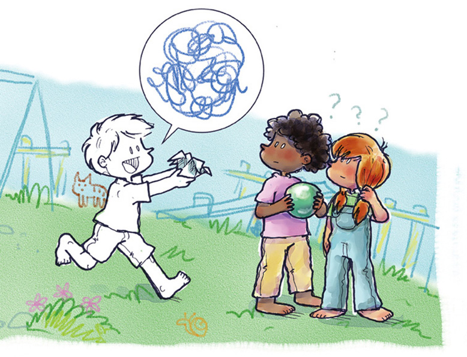

Ilustração de Thomas indo em direção de seus amigos para mostrar o dragão de papel que acabou de encontrar. Mas seus amigos olharam com uma cara de quem não entendeu a forma do papel.
Cheio de empolgação, tentou mostrar o dragão
aos seus colegas. Mas o que os outros enxergavam
era um pedaço de papel dobrado.